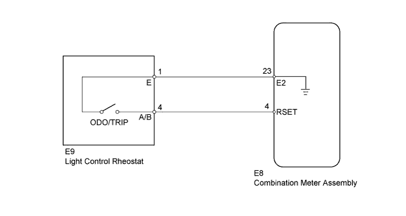
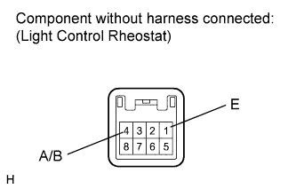
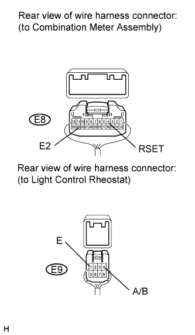

METER / GAUGE SYSTEM > Odo/Trip Switch Malfunction |

| 1.READ VALUE USING INTELLIGENT TESTER (LIGHT CONTROL RHEOSTAT) |
Operate the intelligent tester according to the display and select Data List.
| Tester Display | Measurement Item/Range | Normal Condition | Diagnostic Note |
| ODO/TRIP Change SW | Trip switch (ODO/TRIP switch) condition/ON or OFF | ON: Trip switch pushed OFF: Trip switch not pushed | - |
|
| ||||
| OK | ||
| ||
| 2.INSPECT LIGHT CONTROL RHEOSTAT (TRIP SWITCH) |
 |
Remove the light control rheostat (Click here).
Measure the resistance according to the value(s) in the table below.
| Tester Connection | Switch Condition | Specified Condition |
| 4 (A/B) - 1 (E) | TRIP switch ON (Pushed) | Below 200 Ω |
| TRIP switch OFF (Not pushed) | 1 MΩ or higher |
|
| ||||
| OK | |
| 3.CHECK HARNESS AND CONNECTOR (COMBINATION METER - LIGHT CONTROL RHEOSTAT AND BODY GROUND) |
 |
Disconnect the E8 ECU connector.
Disconnect the E9 switch connector.
Measure the resistance according to the value(s) in the table below.
| Tester Connection | Condition | Specified Condition |
| E8-4 (RSET) - E9-4 (A/B) | Always | Below 1 Ω |
| E8-23 (E2) - E9-1 (E) | ||
| E8-23 (E2) - Body ground | ||
| E8-4 (RSET) or E9-4 (A/B) - Body ground | 10 kΩ or higher |
|
| ||||
| OK | ||
| ||